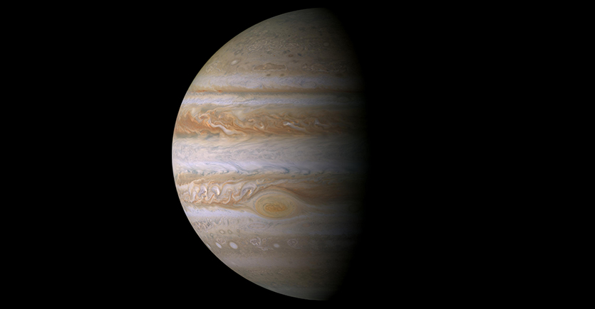
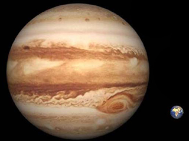
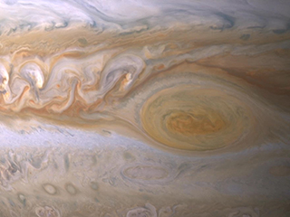

Jupiter
The Big Brother of Space
Jupiter, is like a giant, he's the big brother among the planets in our solar system. You see, it's so massive, it could fit over 1,300 Earths! Imagine, a giant soup pot. But instead of soup, it's swirling with gases like hydrogen and helium, the same stuff that make our party balloons float. Now, picture Jupiter's famous Great Red Spot. This is not just any spot, but a humongous storm, much like a whirlpool in our soup pot, that has been swirling and spinning for centuries! Imagine a storm so vast, it could swallow up 2 to 3 Earth-sized balls without a hiccup. Despite its distance from us, it still tries to protect its smaller siblings, like Earth, from space debris, pulling many comets and asteroids towards it with its strong gravity, as if it's playing an endless game of cosmic catch. So you see, even though Jupiter might be far away, its role in our celestial family is both awe-inspiring and vital, just like a big brother's should be.
Quick Facts
- Day: 9.92496 Hours
- Year: 4,333 Earth days
- Radius: 43,440.7 miles | 69,911 kilometers
- Planet Type Gas giant
- Moons: 53 confirmed | 14 provisional (for a possible total of 67 moons)
Jupiter is the fifth planet from our sun and the largest planet in the solar system. Jupiter's stripes and swirls are cold, windy clouds of ammonia and water. The atmosphere is mostly hydrogen and helium, and its iconic Great Red Spot is a giant storm bigger than Earth that has raged for hundreds of years.
Jupiter is surrounded by 53 confirmed moons, as well as 14 provisional ones — for a possible total of 67 moons. Scientists are most interested in the "Galilean satellites" — the four largest moons discovered by Galileo Galilei in 1610: Europa, Callisto, Ganymede and Io. Jupiter also has three rings, but they are very hard to see and not nearly as intricate as Saturn's.
Jupiter is named after the king of ancient Roman gods.
Size and Distance
With a radius of 43,440.7 miles (69,911 kilometers), Jupiter is 11 times wider than Earth. If Earth were the size of a nickel, Jupiter would be about as big as a basketball.
From an average distance of 484 million miles (778 million kilometers), Jupiter is 5.2 astronomical units away from the sun. One astronomical unit (abbreviated as AU), is the distance from the sun to Earth. From this distance, it takes sunlight 43 minutes to travel from the sun to Jupiter.
Orbit and Rotation
Jupiter has the shortest day in the solar system. One day on Jupiter takes only about 10 hours (the time it takes for Jupiter to rotate or spin around once), and Jupiter makes a complete orbit around the sun (a year in Jovian time) in about 12 Earth years (4,333 Earth days).
Its equator is tilted with respect to its orbital path around the sun by just 3 degrees. This means Jupiter spins nearly upright and does not have seasons as extreme as other planets do.
Formation
Jupiter took shape when the rest of the solar system formed about 4.5 billion years ago, when gravity pulled swirling gas and dust in to become this gas giant. Jupiter took most of the mass left over after the formation of the sun, ending up with more than twice the combined material of the other bodies in the solar system. In fact, Jupiter has the same ingredients as a star, but it did not grow massive enough to ignite.
About 4 billion years ago, Jupiter settled into its current position in the outer solar system, where it is the fifth planet from the sun.
Structure
The composition of Jupiter is similar to that of the sun — mostly hydrogen and helium. Deep in the atmosphere, pressure and temperature increase, compressing the hydrogen gas into a liquid. This gives Jupiter the largest ocean in the solar system — an ocean made of hydrogen instead of water. Scientists think that, at depths perhaps halfway to the planet's center, the pressure becomes so great that electrons are squeezed off the hydrogen atoms, making the liquid electrically conducting like metal. Jupiter's fast rotation is thought to drive electrical currents in this region, generating the planet's powerful magnetic field. It is still unclear if, deeper down, Jupiter has a central core of solid material or if it may be a thick, super-hot and dense soup. It could be up to 90,032 degrees Fahrenheit (50,000 degrees Celsius) down there, made mostly of iron and silicate minerals (similar to quartz).
Surface
As a gas giant, Jupiter doesn't have a true surface. The planet is mostly swirling gases and liquids. While a spacecraft would have nowhere to land on Jupiter, it wouldn't be able to fly through unscathed either. The extreme pressures and temperatures deep inside the planet crush, melt and vaporize spacecraft trying to fly into the planet.
Atmosphere
Color image showing cloud swirls and Jupiter's Great Red Spot.
Jupiter's Great Red Spot trapped between two powerful jet streams.
Jupiter's appearance is a tapestry of colorful cloud bands and spots. The gas planet likely has three distinct cloud layers in its "skies" that, taken together, span about 44 miles (71 kilometers). The top cloud is probably made of ammonia ice, while the middle layer is likely made of ammonium hydrosulfide crystals. The innermost layer may be made of water ice and vapor.
The vivid colors you see in thick bands across Jupiter may be plumes of sulfur and phosphorus-containing gases rising from the planet's warmer interior. Jupiter's fast rotation — spinning once every 10 hours — creates strong jet streams, separating its clouds into dark belts and bright zones across long stretches.
With no solid surface to slow them down, Jupiter's spots can persist for many years. Stormy Jupiter is swept by over a dozen prevailing winds, some reaching up to 335 miles per hour (539 kilometers per hour) at the equator. The Great Red Spot, a swirling oval of clouds twice as wide as Earth, has been observed on the giant planet for more than 300 years. More recently, three smaller ovals merged to form the Little Red Spot, about half the size of its larger cousin. Scientists do not yet know if these ovals and planet-circling bands are shallow or deeply rooted to the interior.
Potential for Life
Jupiter's environment is probably not conducive to life as we know it. The temperatures, pressures and materials that characterize this planet are most likely too extreme and volatile for organisms to adapt to.
While planet Jupiter is an unlikely place for living things to take hold, the same is not true of some of its many moons. Europa is one of the likeliest places to find life elsewhere in our solar system. There is evidence of a vast ocean just beneath its icy crust, where life could possibly be supported.
Moons
With four large moons and many smaller moons, Jupiter forms a kind of miniature solar system. Jupiter has 53 confirmed moons, as well as 14 provisional ones — for a possible total of 67 moons. These newly discovered, provisional moons are reported by astronomers and acknowledged with a temporary designation by the International Astronomical Union. Once their orbits are confirmed, they are included in Jupiter's confirmed moon count.
Jupiter's four largest moons — Io, Europa, Ganymede and Callisto — were first observed by the astronomer Galileo Galilei in 1610 using an early version of the telescope. These four moons are known today as the Galilean satellites, and they're some of the most fascinating destinations in our solar system. Io is the most volcanically active body in the solar system. Ganymede is the largest moon in the solar system (even bigger than the planet Mercury). Callisto's very few small craters indicate a small degree of current surface activity. A liquid-water ocean with the ingredients for life may lie beneath the frozen crust of Europa, making it a tempting place to explore.
More on Jupiter's MoonsRings
Discovered in 1979 by NASA's Voyager 1 spacecraft, Jupiter's rings were a surprise, as they are composed of small, dark particles and are difficult to see except when backlit by the sun. Data from the Galileo spacecraft indicate that Jupiter's ring system may be formed by dust kicked up as interplanetary meteoroids smash into the giant planet's small innermost moons.
Magnetosphere
The Jovian magnetosphere is the region of space influenced by Jupiter's powerful magnetic field. It balloons 600,000 to 2 million miles (1 to 3 million kilometers) toward the sun (seven to 21 times the diameter or Jupiter itself) and tapers into a tadpole-shaped tail extending more than 600 million miles (1 billion kilometers) behind Jupiter, as far as Saturn's orbit. Jupiter's enormous magnetic field is 16 to 54 times as powerful as that of the Earth. It rotates with the planet and sweeps up particles that have an electric charge. Near the planet, the magnetic field traps swarms of charged particles and accelerates them to very high energies, creating intense radiation that bombards the innermost moons and can damage spacecraft.
Jupiter's magnetic field also causes some of the solar system's most spectacular aurorae at the planet's poles.
Exploration
While Jupiter has been known since ancient times, the first detailed observations of this planet were made by Galileo Galilei in 1610 with a small telescope. More recently, this planet has been visited by passing spacecraft, orbiters and probes.
Pioneer 10 and 11 and Voyager 1 and 2 were the first to fly by Jupiter in the 1970s, and since then we've sent Galileo to orbit the gas giant and drop a probe into its atmosphere. Cassini took detailed photos of Jupiter on its way to neighboring Saturn, as did New Horizons on its quest for Pluto and the Kuiper Belt. The next mission is Juno, which arrived in the Jovian system in July 2016.
Significant Dates:
- 1610 Galileo Galilei makes the first detailed observations of Jupiter.
- 1973 Pioneer 10 becomes the first spacecraft to cross the asteroid belt and fly past Jupiter.
- 1979 Voyager 1 and 2 discover Jupiter's faint rings, several new moons and volcanic activity on Io's surface.
- 1992 Ulysses swung by Jupiter on Feb. 8, 1992. The giant planet's gravity bent the spacecraft's flight path southward and away from the ecliptic plane, putting the probe into a final orbit that would take it over the sun's south and north poles.
- 1994 Astronomers observe as pieces of comet Shoemaker-Levy 9 collide with Jupiter's southern hemisphere.
- 1995-2003 The Galileo spacecraft drops a probe into Jupiter's atmosphere and conducts extended observations of Jupiter and its moons and rings.
- 2000 Cassini makes its closest approach to Jupiter at a distance of approximately 6.2 million miles (10 million kilometers), taking a highly detailed true color mosaic photo of the gas giant.
- 2007 Images taken by NASA's New Horizons spacecraft, on the way to Pluto, show new perspectives on Jupiter's atmospheric storms, the rings, volcanic Io, and icy Europa.
- 2009 On 20 July, almost exactly 15 years after fragments of comet Shoemaker-Levy slammed into Jupiter, a comet or asteroid crashes into the giant planet's southern hemisphere.
- 2011 Juno launches to examine Jupiter's chemistry, atmosphere, interior structure and magnetosphere.
- 2016 NASA's Juno spacecraft arrives at Jupiter, conducting an in-depth investigation of the planet's atmosphere, deep structure and magnetosphere for clues to its origin and evolution.